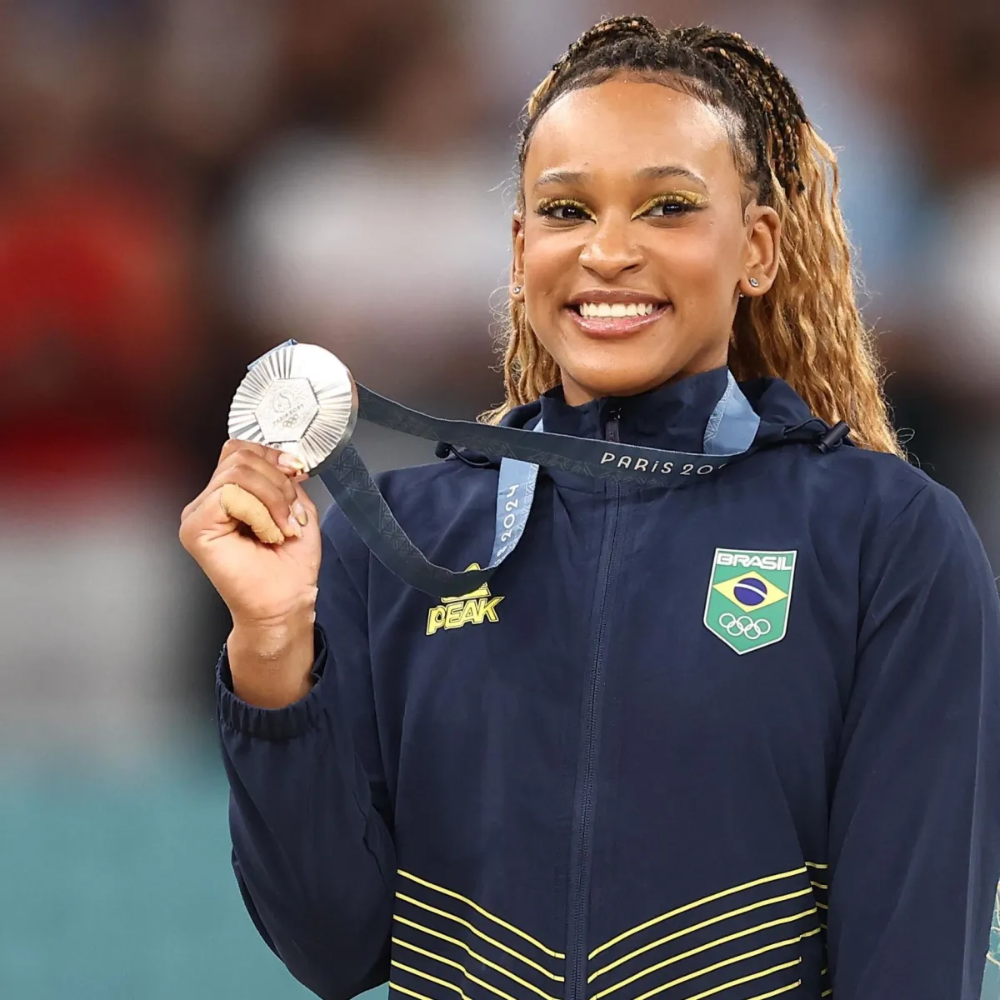

A história da ginástica artística é mais antiga do que pensamos. Acredita-se que os gregos praticavam diversos movimentos e acrobacias em alguns aparelhos com o intuito de atingir a perfeição física. Além disso, a ginástica grega era utilizada como uma forma de preparar o corpo tanto para a prática de outros esportes como para o treinamento militar.
No início do século XIX, o pedagogo alemão Friedrich Ludwig Christoph Jahn (1778-1852) foi um dos responsáveis por transformar a ginástica artística em modalidade esportiva.
No ano de 1811, ele sistematizou a prática da ginástica e fundou clubes de ginástica para jovens e interessados na modalidade. Além disso, ele ainda criou diversos aparelhos utilizados até hoje, tais como o cavalo com alças, traves, barras paralelas e horizontais.
Por esses motivos, Friedrich Ludwig Christoph Jahn é considerado o “pai da ginástica”.
Em 1881, foi fundada a Federação Europeia de Ginástica, o que resultou na consolidação dessa modalidade esportiva.
A ginástica artística está presente nas Olimpíadas desde o ano de 1896, quando foram realizadas em Atenas. Por outro lado, nos Jogos Pan-americanos, ela está presente desde 1951.
No que se refere à categoria feminina, as mulheres passaram a competir somente nos Jogos Olímpicos de 1928, realizados na Holanda. Atualmente, as ginastas femininas têm uma grande representatividade no Brasil e no mundo.
Conquistamos 4 medalhas dentro da ginastica artisticas, sendo elas em 4 modalidades diferentes. Rebeca Andrade conquistou a medalha de prata no individual geral.

Rebeca Andrade conquistou a medalha de prata no salto.
Rebeca Andrade conquistou a medalha de ouro no solo.
E a equipe feminina brasileira de ginastica conquistou a medalha de bronze, sendo a primeira vez que conquistam medalha nessa categoria.